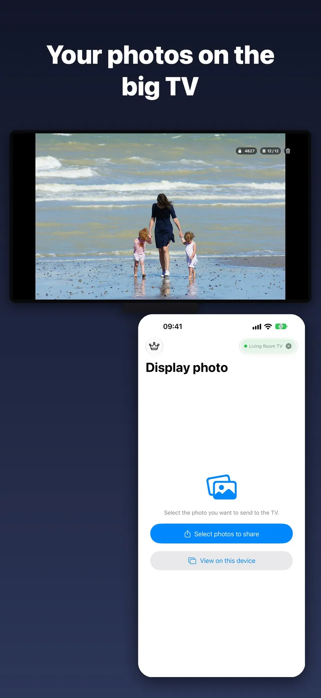
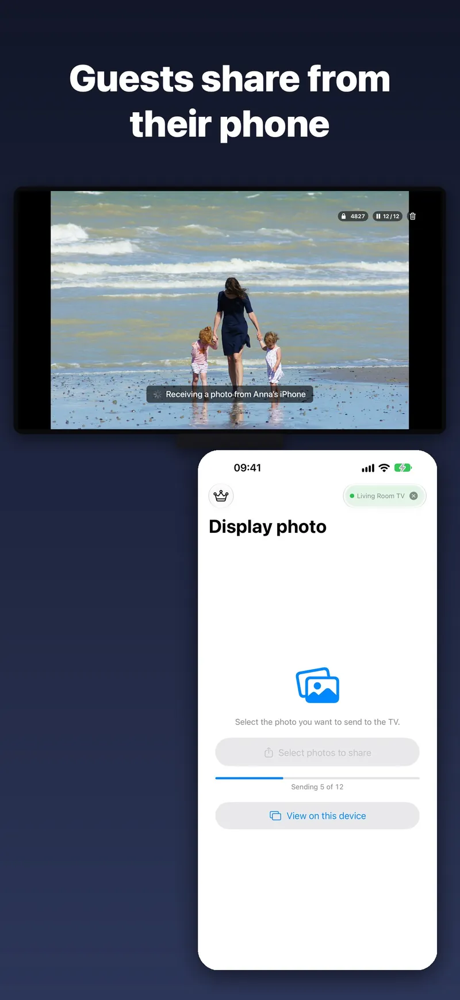
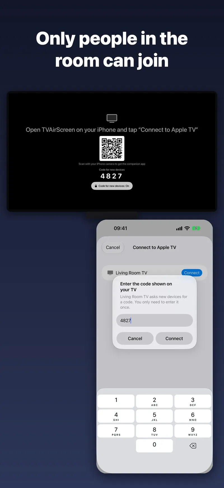
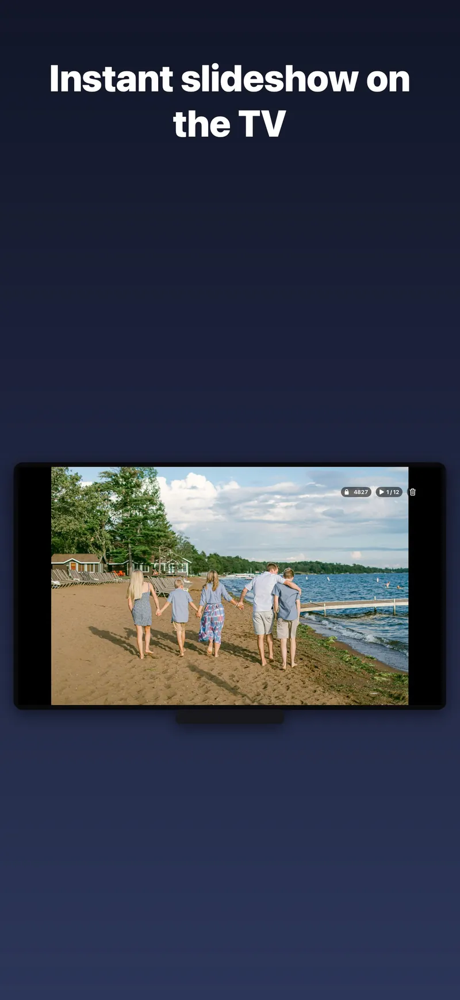

Pass the remote,
not the phone.
TVAirScreen puts your photos on your Apple TV in seconds, so the whole room can enjoy them together — big, bright and easy to browse with the Siri Remote.
No setup · No accounts · No Apple ID




Features
No setup
Your iPhone and Apple TV connect directly. There's no AirPlay to configure, no Apple ID to share and nothing to sign up for.
A code for new phones
Your TV shows a 4-digit code. A new phone enters it once and is remembered from then on, so guests can share without touching your settings.
A whole album at once
Photos arrive in the order you picked them. Swipe left and right to browse them on the big screen.
Instant slideshow
Press Play/Pause on the Siri Remote for a looping slideshow. Your iPhone stays awake while connected, so the show keeps going.
PDFs and videos
Every PDF page becomes a slide — sheet music, lessons, presentations. Videos play full screen, and Play/Pause pauses them.
Share from anywhere
Share straight from Photos, Files or Safari with the TVAirScreen share button, or take a new photo with the camera.
Made for moments like
- Holiday photos with the grandparents
- Parties, weddings and reunions
- Travel slideshows the evening you get home
- Classrooms, meetings and presentations
- Choir, band and church rehearsals
- Holiday rentals
Free to start. Pro is yours forever.
Send up to 5 photos at a time for free, with no account. Pro is a one-time purchase, with no subscription.
- Unlimited photos per batch
- PDFs, every page as a slide
- Videos
- Family Sharing
Bought TVAirScreen before it became free? Pro is already yours. See Support if it isn't showing.
Questions
Is this AirPlay?
No. TVAirScreen connects your iPhone or iPad straight to the TVAirScreen app on your Apple TV, so there's nothing to set up in AirPlay and no Apple ID to share.
What do I need?
An Apple TV with TVAirScreen installed, and TVAirScreen on each iPhone or iPad that sends photos. The TV shows a QR code that takes you to the app.
Are my photos uploaded anywhere?
No. They go straight from your iPhone or iPad to your Apple TV. The Apple TV keeps them only for the current session. See the privacy policy.
Get started in a minute.
Install TVAirScreen on your Apple TV, open it on your iPhone or iPad, and tap Connect to Apple TV.
Need help with TVAirScreen? Get support or email luc.alexander.sun@icloud.com.